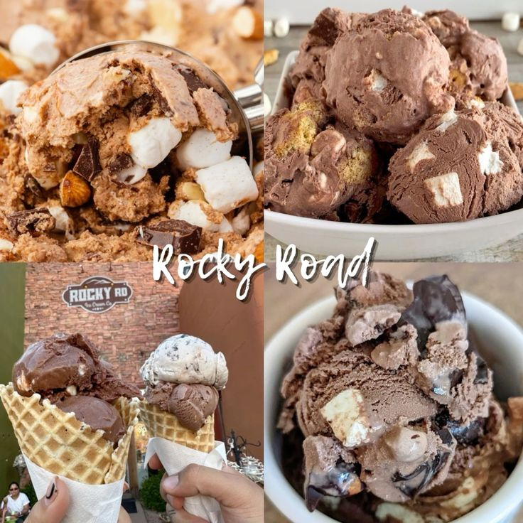
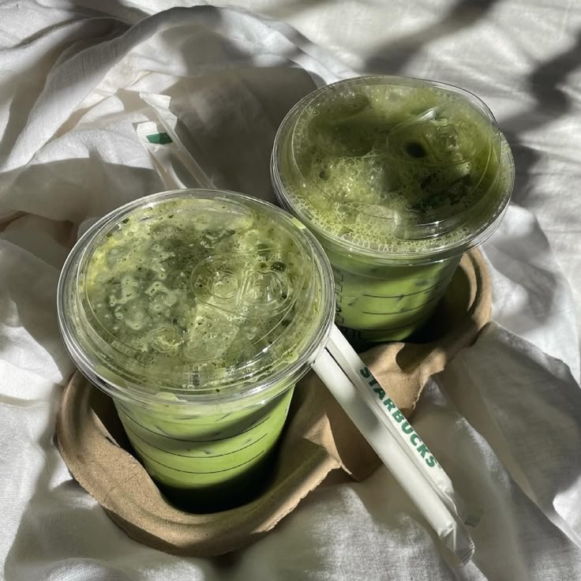

Favorite Food

If it has chocolate, I'm in. Here are the treats I never say no to.
- Chocolates
- Chocolate cake
- Rocky road ice cream
- Puto balanghoy
- Inipit
- Chocolate waffles
Most loved: anything chocolate.
Study snacks
- Coffee
- Cokes
- Piatos
- Chicharon
- Other chips
Favorite Drinks

Calm and cozy
- Matcha latte
- Coffee
Cold and fizzy
- Soda
- Carbonated drinks like Coke and Pepsi
Fresh and fruity
- Lemonades
- Orange juices